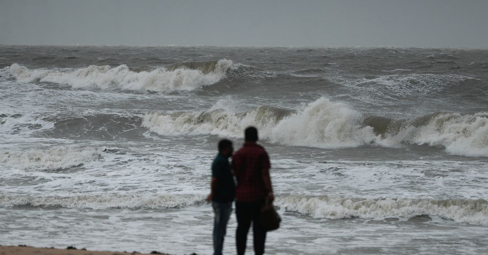

Cyclone Biparjoy: When It Will Hit India and Pakistan and Map of Affected Areas
Image Credits https://www.reuters.com/world/asia-pacific/cyclone-biparjoy-off-india-pakistan-what-you-need-know-2023-06-14/
It was a sunny day on the coast of India. The fishermen of a small village were getting ready to go to sea, as they did every day. But something was different that day. The air was heavy and humid, and the sky had a strange yellowish tint.
The fishermen consulted among themselves and decided to postpone their trip. They had heard of a cyclone that was approaching, and they didn't want to take any risks.
The cyclone was Cyclone Biparjoy.
What is Cyclone Biparjoy?
Cyclone Biparjoy is a tropical storm that has formed in the Bay of Bengal. It is expected to hit the eastern coast of India and the southern coast of Pakistan in the coming days.
The cyclone is named Biparjoy, which means "height" in Bengali. It has been given this name because it is expected to bring very high winds and storm surges.
When Will Cyclone Biparjoy Hit India and Pakistan?
According to the India Meteorological Department (IMD), Cyclone Biparjoy is likely to make landfall on the eastern coast of India on November 26, 2021. It is expected to hit the states of Andhra Pradesh and Odisha.
The Pakistan Meteorological Department (PMD) has also issued a warning for the southern coast of Pakistan, and has advised fishermen not to go to sea until the cyclone has passed.
Map of Affected Areas
Here is a map of the areas that are expected to be affected by Cyclone Biparjoy:

Examples of Cyclone Impacts
Cyclones are not new to India and Pakistan. These countries have faced many cyclones in the past, and the impacts have been devastating.
- In 1999, a super cyclone hit the coast of Odisha, causing the death of more than 10,000 people.
- In 2010, Cyclone Phet caused widespread flooding and damage in Pakistan. More than 50 people were killed and thousands were displaced.
- In 2013, Cyclone Helen hit the coast of Andhra Pradesh, causing the death of 19 people.
- In 2019, Cyclone Fani hit the coast of Odisha, causing the death of 64 people and damaging thousands of homes.
Case Studies
The impacts of cyclones are not limited to loss of life and property damage. They can also have long-term impacts on communities, especially those that are already vulnerable.
Case Study 1: Cyclone Nargis (Myanmar, 2008)
Cyclone Nargis hit Myanmar in 2008, causing the death of more than 140,000 people. The cyclone also destroyed vast areas of farmland and infrastructure.
The long-term impacts of Cyclone Nargis are still being felt in Myanmar today. Many of the areas affected by the cyclone were already facing poverty, and the cyclone exacerbated these issues. Farmers lost their crops and livelihoods, and were forced to leave their homes in search of work.
The international community provided aid to Myanmar in the aftermath of the cyclone, but it was insufficient to fully address the needs of the affected communities.
Case Study 2: Cyclone Phailin (India, 2013)
Cyclone Phailin hit the coast of Odisha in 2013, causing the evacuation of more than 1 million people. The government of India responded quickly to the cyclone, and was able to prevent a large loss of life.
However, the impacts of Cyclone Phailin on the communities affected by the cyclone were significant. Many homes and livelihoods were destroyed, and it took years for communities to recover.
The government of India provided aid to the affected communities, but many people felt that it was insufficient. The cyclone exposed the weaknesses in India's disaster preparedness, and led to improvements in the country's disaster management policies.
Conclusion
Cyclones like Biparjoy are a reminder of the power of nature, and the importance of being prepared for natural disasters. Here are three key takeaways from this article:
- Listen to the warnings of local authorities and take precautions to keep yourself and your loved ones safe.
- Cyclones can have long-term impacts on communities, especially those that are vulnerable. It is important to provide aid and support to affected communities in the aftermath of a cyclone.
- Cyclones also provide an opportunity to assess and improve disaster management policies. Governments and communities can learn from past cyclones and work towards better preparedness for the future.
Curated by Team Akash.Mittal.Blog
Share on Twitter Share on LinkedIn